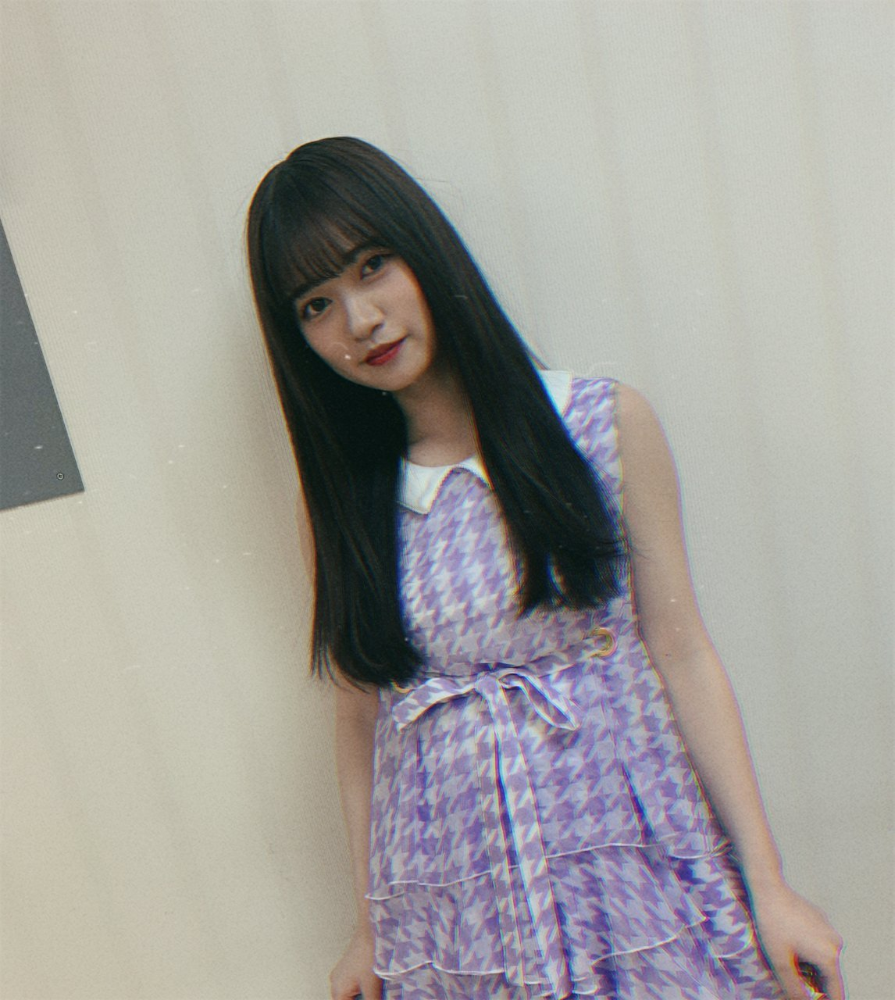
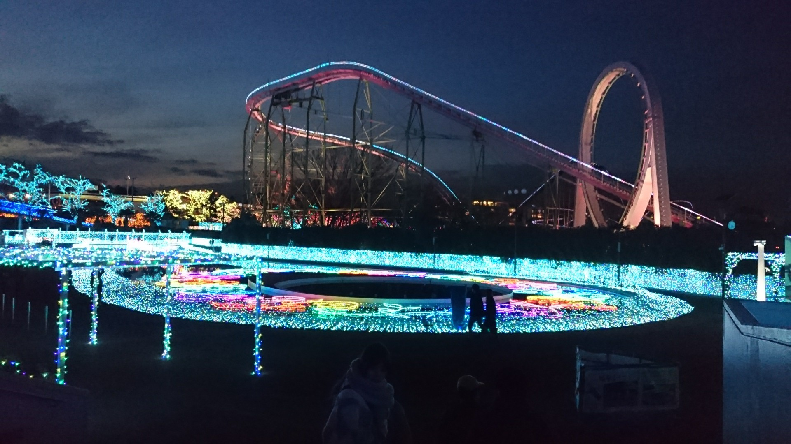

2020/0414Tueシャボン玉
最近、自分の寝言までいかないけど
んーーって声にびっくりして起きることが多々あります。
今までその様な経験がなかったので
何か対策を練らないと
確か、この話日奈子だっけ？！
私も同じーって誰かと話した気がする
ふと思い出してブログのネタに、、、
毎日、色んなジャンルの音楽を聴いてますが
やっぱり音楽の持つパワーは偉大だなーと感じました！
色んな曲に触れる機会をくれて
家族に感謝！！
ちなみに、皆さんの好きな曲やおすすめの曲MVや面白い作品やlive
教えてください。☺️
コメントいつもありがとうございます。
コメントお待ちしてます。☺️


綺麗な景色をお裾分け！！
2020/04/14 20:42


コメント(620)
大好き！
自分の声で起きちゃいます！
てか、可愛すぎです。
好きです！
ミセスグリーンアップルの「鯨の唄」オススメ！
絢音ちゃんも読んでいるとか。
綺麗な景色だね！
自分は乃木坂の他にMr.Childrenが好きだな！
特に「くるみ」のMVが良いよ！
これからも頑張って！
お気に召すかは分かりませんが何かしら聴いて頂けたら嬉しいです！
らんぜに早く会いたいなー…(..)
寝言言う蘭世可愛いです！
最近レデイオフィッシュの曲よく聞きます！
コロナウイルスが流行っているので体には、気をつけてください！応援してます！
周りの音とか聞かなくなりすぎたらそうなるもんなんかなあ、、
KNOCK OUT MONKEYのTODAYっていう曲おすすめ！
あとハルカミライっていうバンドはボーカルの人めちゃくちゃ歌うまいしテンション上がる曲多いからどの曲もおすすめ！
可愛い写真と綺麗な景色ありがとう！
好きなMVはアナスターシャと滑走路！！
好きなLIVEは23rdシングル発売記念のLIVE！！
握手会やLIVEで会えるのを楽しみにコロナを乗り越えます！！
最近は坂道系とAAAをずっと聞いてるよ！！
今はとても大変だと思うけどこれからも応援してるよー！！
ブログ更新ありがとう☺️
んーだったら可愛いですね笑
んごーは怖いけど
蘭世ちゃんは室内でどんな運動やストレッチしてますか？
僕もよく自分のんー！って声で起きることがあるんだけれど、悪い夢でも見てるのか、、笑
この外出自粛期間中にいろんなアーティストさんがMVを公開してくれてるけど、自分の中で一番激アツだったのはミスチルですかね。「箒星」っていう曲が本当に好きで、歌詞も元気をもらえるしMVもストーリーがあって楽しめるし、何度も観てます。
蘭世のおすすめもあれば、モバメかブログで教えてください！
景色綺麗ですね
毎日家にいますが、意外と充実しております
私のおすすめの曲はUNISON SQUARE GARDENさんのオリオンをなぞるです！是非聞いてみてください
今回もブログ更新ありがとうございます
面白いライブ…好きな曲…。
私、Perfume大好きなんだけどね。微かなカオリって曲、MVも含めて柔らかくてすごいいいの。ぜひ聴いて見て欲しいなぁ。
あとメジャーではないけどPerfumeの575って曲。自分の部屋で電気消して落ち着いた中で、ぜひこれはイヤホンで聴いて欲しいなぁ。
握手会でも沢山色んな話したい！なんかこれ、髪色暗く見えるね！どんな蘭世ちゃんも一番可愛い！
おすわけもありがとう。蘭世ちゃんのおかげで、午後の仕事も頑張れそうだよ！
Arctic Monkeysさんの曲は、お洒落でどこか懐かしいです。
気が向いたら是非お聴き下さい。
僕は最近遅くまで起きて早めの時間に目覚めることが多いのですが、すぐに二度寝して結局お昼に起きるって生活になってきました笑
確かに自分の声にびっくりして起きることもありますよね笑
良ければ、Mrs. GREEN APPLEさんや、ONE OK ROCKさん等、邦ロックに触れてみてはどうでしょうか？
おすすめは、Mrs. GREEN APPLE「青と夏」、ONE OK ROCK「カゲロウ」、「Stand Out Fit In」、RADWIMPS「会心の一撃」、「ふたりごと」、backnumber「青い春」、NICO Touches the Walls「手を叩け」、「夏の大三角形」、「天地ガエシ」、「diver」
です！ぜひこの機会に聴いてみてください！
大好きです。
ユウキ
確かにそんな時ありますよねー、蘭世さんがそれ言ってるの想像するとめっちゃ可愛い感じします笑
音楽は最高です！好きな曲は君に贈る花がないとか、滑走路とか、色々ありますね、MVはアナスターシャがダントツです！
作品は、漫画ですが最近五等分の花嫁を読んでます！
LIVEは行ったことがあるわけではないですがSEKAI NO OWARIのLIVEは独特な世界観があっていつか行ってみたいです
こちらこそいつもブログありがとうございます
ではまた！
これからもよろしくお願いします、大好きです
UY
普段アイドル以外あんまり聞かんけど、いいなーって思った曲はヨルシカさんの曲かな
逆に蘭世さんのおすすめの曲とか、普段聴いとる曲とか知りたい！
日本の音楽やったら最近はokamoto'sがおすすめ！
体調気を付けて！
自分は最近決まった時間に起きれるようになりました笑
折角なので乃木坂46のMV以外でひとつ！
Little Glee Monsterさんの「HARMONY」
リトグリは一番最初にどハマりしたアーティストさんで、この曲をきっかけに好きになったので良ければ聞いてみてください！
体調管理気をつけます
大好きです
そうや
シャボン玉って案外難しいですよね笑笑
めちゃくちゃ可愛くてにこにこした
僕はたまに自分の声で起きちゃいます笑笑
寝てる時にたまに変な声出てるって言われます笑
僕の好きな曲は最近なら乃木坂だとアナスターシャですけどMr.ChildrenさんのCROSS ROADとかめっちゃ聞きます
今ミスチルさんの公式youtubeでMVが公開されてるのでよかったら見てください！
自分は今は家と塾以外は基本外出してません
らんぜさんが元気で何よりです
僕も元気です！
受験あるし次いつ会えるか分からないですけど楽しみにしてますね！
液体間違えて舐めて嫌な思いをしました。
蘭世さんが元気そうでよかったです！
ぼくは、今週末から大学の授業がオンラインで始まるので最近はその準備で忙しいです！初めてのことばかりで少々困惑してますが、暇な日々よりはいいかなと思っております笑
僕が好きな曲は乃木坂以外では星野源さんのアイデアやfamilysongです！今の御時世の中で聴くとさらに心に響きます。有名な曲ですが、歌詞や源さんらしいメロディラインが落ち着きます。
そんなこんなで僕も元気に過ごしてます！こうやって蘭世さんのブログを見れていることが幸せです！ありがとう！
本当に大変な時期ですが、みんなで協力して乗り越えていきたいですね！おうち時間、自分なりに充実した時間にしたいと思っております。
蘭世さん大好きぴです！
寝言で起きることはないけど最近夢で起きることはあるので多少なりとも自粛生活がストレスになってるのかなーとは思います。
こういうときだからいろいろな曲を聞いたり映画を見たりするのはいいですよね！
全部聞きます全部digります！！！！！
最近は家で暇ですることないので、音楽を聴くより映画を見てるよ！最近見た映画でよかったのは、「きみによむ物語」がめっちゃよかった。めっちゃ感動するし泣ける話だよ！見てみて！
時間がたくさんあるから家で出来るだけ料理とお菓子の勉強してる！このままコロナがおさまらないと検定試験もあるかわからないけど、勉強しても損はないからしてる！w
映画の他にもバスラのDVD見たり、乃木中みたりしてる！
でも、好きな曲、「10,000 Hours」ってやつが好き！聞いてみて〜(^^)
次いつ会えるかわからないけど、その時に会えなかった間頑張ったこと話せるように料理も勉強も頑張る！
体調には気をつけてね。たくさんブログ更新してくれてありがとう(^^)
大好きです。
あいら
僕が最近聴いてる曲は、BURNOUT SYNDROMESさんの「SPEECH」です
乃木坂の好きな曲は不眠症ですね。アンダラの北海道で蘭世がセンターで披露してくれたときに好きになりました。
普通に最近好きな曲だとking gnuさんの楽曲にハマってます！
後は曲とかじゃないけどすごくラジオを聴きますね。creepy nutsさんのラジオとかフリースタイルダンジョン見てる蘭世にはハマるかも！！？もう聴いてたらごめんなさい。
ex大衆本日発売だと思うので買って読んできます！またコメントします！
自分地震が来ても気づかないくらい起きないんですよね、、笑笑
backnumberさんとかWANIMAさんとかバンド系の曲を自分はよく聞いてますね。。
YouTubeに春茶さんっていう歌い手の方がいるんですけど、その方のカバーも好きです！
このご時世にたくさんブログアップして下さりありがとうございます！！
広島住みの璃音
最近はindigo la EndとかMrs. GREEN APPLEっていうバンドにハマってます！
音楽のパワーってホント凄いです！
いつも勇気を貰ったり背中を後押ししてくれたり…！
またブログ更新待ってます！
座って寝てたりすると自分のんーって声に驚いてよく起きることはありました笑
僕の好きな曲は
ロビンソン/スピッツ
まなざし/Honey L Days
Rolling star/YUI
とかです。
乃木坂でも好きな曲多いけどとりあえず乃木坂以外の曲を挙げました。
またちょくちょく好きな曲コメントしますね
おうち時間を退屈な時間じゃなくしてくれてありがとう
コメントする